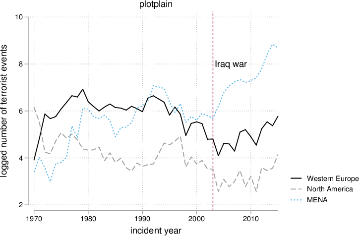
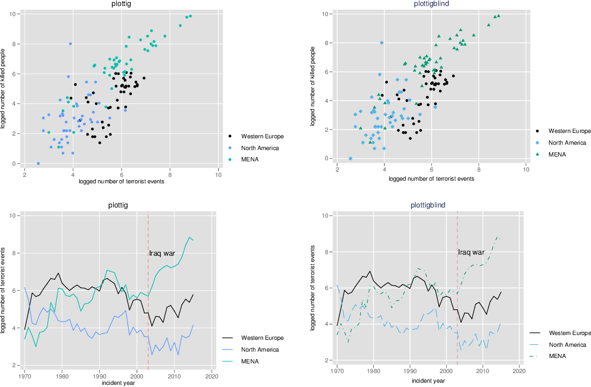
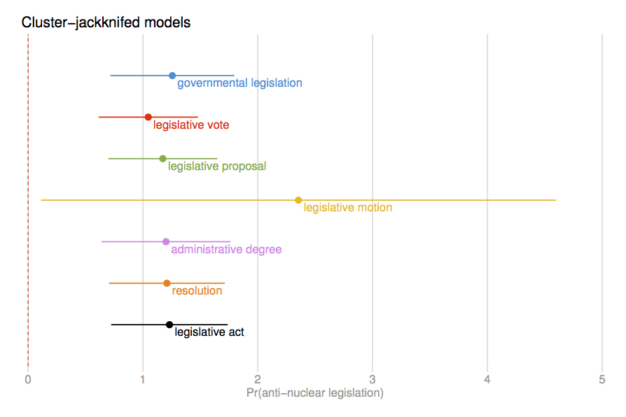

Stata Graphic Schemes
Throughout the years I have created several Stata figure schemes. This page gives a brief overview. For full documentation, see the how-to PDF or the Stata Journal article.

plotplain

plottig

538
Installation
Install plotplain and plottig via blindschemes, and the 538 scheme via g538schemes:
ssc install blindschemes, replace all
ssc install g538schemes, replace all
ssc install g538schemes, replace all
Set a scheme as your permanent default:
set scheme plottig, permanently
For a broader overview of user-written Stata schemes, see this GitHub repository and this Stata Guide post.